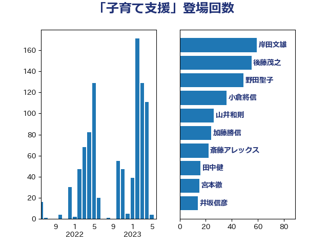

単語「子育て支援」

| 坂本哲志 | 自由民主党 | 119 回 |
| 野田聖子 | 自由民主党 | 49 回 |
| 後藤茂之 | 自由民主党 | 46 回 |
| 古屋範子 | 公明党 | 26 回 |
| 塩村あやか | 立憲民主党 | 22 回 |
| 岸田文雄 | 自由民主党 | 18 回 |
| 塩川鉄也 | 日本共産党 | 14 回 |
| 田中健 | 国民民主党 | 13 回 |
| 山井和則 | 立憲民主党 | 12 回 |
| 田村憲久 | 自由民主党 | 12 回 |
| 杉田水脈 | 自由民主党 | 11 回 |
| 森屋宏 | 自由民主党 | 11 回 |
| 音喜多駿 | 日本維新の会 | 11 回 |
| 佐々木さやか | 公明党 | 10 回 |
| 倉林明子 | 日本共産党 | 10 回 |
| 山際大志郎 | 自由民主党 | 10 回 |
| 泉健太 | 立憲民主党 | 10 回 |
| 大西健介 | 立憲民主党 | 9 回 |
| 高木かおり | 日本維新の会 | 9 回 |
| 高野光二郎 | 自由民主党 | 9 回 |
| 佐藤英道 | 公明党 | 8 回 |
| 平木大作 | 公明党 | 8 回 |
| 木原誠二 | 自由民主党 | 8 回 |
| 田村智子 | 日本共産党 | 8 回 |
| 菅義偉 | 自由民主党 | 8 回 |
| 麻生太郎 | 自由民主党 | 8 回 |
| 吉田統彦 | 立憲民主党 | 7 回 |
| 石川博崇 | 公明党 | 6 回 |
| 緒方林太郎 | 無所属 | 6 回 |
| 伊佐進一 | 公明党 | 5 回 |
| 古賀友一郎 | 自由民主党 | 5 回 |
| 宮本徹 | 日本共産党 | 5 回 |
| 山本博司 | 公明党 | 5 回 |
| 岡本あき子 | 立憲民主党 | 5 回 |
| 枝野幸男 | 立憲民主党 | 5 回 |
| 森山浩行 | 立憲民主党 | 5 回 |
| 浅野哲 | 国民民主党 | 5 回 |
| 萩生田光一 | 自由民主党 | 5 回 |
| 阿部知子 | 立憲民主党 | 5 回 |
| 三ッ林裕巳 | 自由民主党 | 4 回 |
| 三原じゅん子 | 自由民主党 | 4 回 |
| 岸真紀子 | 立憲民主党 | 4 回 |
| 打越さく良 | 立憲民主党 | 4 回 |
| 朝日健太郎 | 自由民主党 | 4 回 |
| 柴田巧 | 日本維新の会 | 4 回 |
| 金村龍那 | 日本維新の会 | 4 回 |
| 三木圭恵 | 日本維新の会 | 3 回 |
| 上田清司 | 国民民主党 | 3 回 |
| 井坂信彦 | 立憲民主党 | 3 回 |
| 山田勝彦 | 立憲民主党 | 3 回 |
| 江田憲司 | 立憲民主党 | 3 回 |
| 田村まみ | 国民民主党 | 3 回 |
| 藤田文武 | 日本維新の会 | 3 回 |
| 中川正春 | 立憲民主党 | 2 回 |
| 中谷一馬 | 立憲民主党 | 2 回 |
| 今枝宗一郎 | 自由民主党 | 2 回 |
| 伊藤孝恵 | 国民民主党 | 2 回 |
| 伊藤岳 | 日本共産党 | 2 回 |
| 加藤勝信 | 自由民主党 | 2 回 |
| 古賀篤 | 自由民主党 | 2 回 |
| 吉川赳 | 無所属 | 2 回 |
| 國重徹 | 公明党 | 2 回 |
| 太田房江 | 自由民主党 | 2 回 |
| 山東昭子 | 自由民主党 | 2 回 |
| 後藤祐一 | 立憲民主党 | 2 回 |
| 矢倉克夫 | 公明党 | 2 回 |
| 石井啓一 | 公明党 | 2 回 |
| 石井苗子 | 日本維新の会 | 2 回 |
| 逢坂誠二 | 立憲民主党 | 2 回 |
| 野上浩太郎 | 自由民主党 | 2 回 |
| 金子恭之 | 自由民主党 | 2 回 |
| 阿部司 | 日本維新の会 | 2 回 |
| 高木啓 | 自由民主党 | 2 回 |
| 高木毅 | 自由民主党 | 2 回 |
| 中野洋昌 | 公明党 | 1 回 |
| 仁木博文 | 無所属 | 1 回 |
| 吉川元 | 立憲民主党 | 1 回 |
| 吉田はるみ | 立憲民主党 | 1 回 |
| 和田政宗 | 自由民主党 | 1 回 |
| 嘉田由紀子 | 無所属 | 1 回 |
| 奥野総一郎 | 立憲民主党 | 1 回 |
| 小川淳也 | 立憲民主党 | 1 回 |
| 山口那津男 | 公明党 | 1 回 |
| 山岸一生 | 立憲民主党 | 1 回 |
| 山本左近 | 自由民主党 | 1 回 |
| 山谷えり子 | 自由民主党 | 1 回 |
| 川田龍平 | 立憲民主党 | 1 回 |
| 平沢勝栄 | 自由民主党 | 1 回 |
| 斉藤鉄夫 | 公明党 | 1 回 |
| 有村治子 | 自由民主党 | 1 回 |
| 末松信介 | 自由民主党 | 1 回 |
| 杉久武 | 公明党 | 1 回 |
| 杉尾秀哉 | 立憲民主党 | 1 回 |
| 柚木道義 | 立憲民主党 | 1 回 |
| 森田俊和 | 立憲民主党 | 1 回 |
| 横山信一 | 公明党 | 1 回 |
| 武井俊輔 | 自由民主党 | 1 回 |
| 永岡桂子 | 自由民主党 | 1 回 |
| 河西宏一 | 公明党 | 1 回 |
| 浜口誠 | 国民民主党 | 1 回 |
| 田名部匡代 | 立憲民主党 | 1 回 |
| 田島麻衣子 | 立憲民主党 | 1 回 |
| 石原正敬 | 自由民主党 | 1 回 |
| 石川香織 | 立憲民主党 | 1 回 |
| 石田昌宏 | 自由民主党 | 1 回 |
| 神谷裕 | 立憲民主党 | 1 回 |
| 竹内真二 | 公明党 | 1 回 |
| 竹谷とし子 | 公明党 | 1 回 |
| 篠原孝 | 立憲民主党 | 1 回 |
| 芳賀道也 | 国民民主党 | 1 回 |
| 藤井比早之 | 自由民主党 | 1 回 |
| 藤原崇 | 自由民主党 | 1 回 |
| 西岡秀子 | 国民民主党 | 1 回 |
| 赤澤亮正 | 自由民主党 | 1 回 |
| 鈴木隼人 | 自由民主党 | 1 回 |
| 長妻昭 | 立憲民主党 | 1 回 |
| 青山周平 | 自由民主党 | 1 回 |
| 青木愛 | 立憲民主党 | 1 回 |
| 高村正大 | 自由民主党 | 1 回 |
| 高橋光男 | 公明党 | 1 回 |